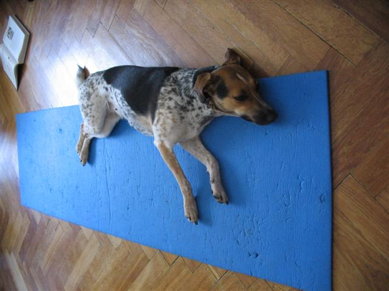
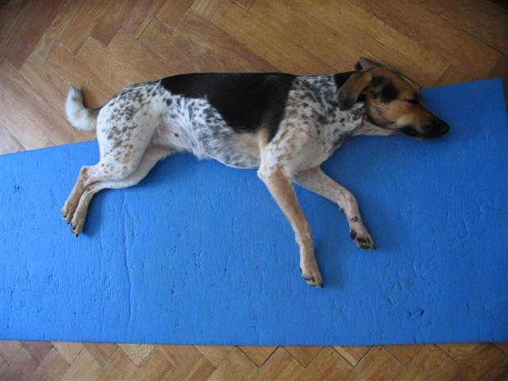

Navigace |
Ásana zmoženého psaNela s námi ráda cvičí jógu. Obvykle obohacuje naše cvičení o prvky napínání svalů při náporu psích paciček. A nejlákavější jsou pro ní právě ty asány, v nichž se hodně napínáme. V současném teplém období se rozhodla nejen aktivě pomáhat nám, ale zapojit se i sama.  Nela zaujímá ásanu zmoženého psa, která se blíží psí variantě tygra.  Páteř je v jedné rovině, ocas volně položený, zadní pacičky u sebe a přední zvolna rozhozené. Dýchání se doporučuje v souladu s pohybem. Cvičení této asány během dne má uvolňující a uklidňujcící účinky, harmonizuje celé strakaté tělo.
|